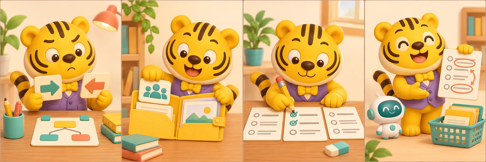

AI学院 · 练习复盘交付前的核验：三道练习与一次复盘用三道情境题练习核验、资料边界和责任判断，再检查自己的实操结果。四格看懂：交付前的核验：三道练习与一次复盘独立作答：先做情境判断，再展开解析。回查材料：判断受众与缺失信息时，回到原始简报。检查交付：逐项检查事实依据、格式和待确认事项。说出改法：写下一处修改及原因，再迁移到自己的工作。先独立判断，再对照材料与验收清单，说明修改的理由。 1. AI 把小组分享写成对所有人开放，该怎么办？表达更吸引人，直接采用回到原始材料，改回读书小组成员参加2. 报名链接没有提供，最适合怎么处理？标记待确认，向活动负责人核实让 AI 猜一个看起来真实的链接3. AI 帮你完成草稿后，交付前谁应检查？模型回答很肯定，可以省略检查实际使用结果的人按验收标准检查查看解析逐题解析选第二项：受众是事实，不能因营销表达而改变。选第一项：缺失信息应核实，不能靠生成补齐。选第二项：工具加速起草，人核对并承担使用责任。 给自己的交付做一次复盘每项事实都能对应到材料缺失信息已标记，未编造受众、格式、字数符合任务能说清至少一处人工修改的原因勾选仅用于本页自查，不计入练习成绩。课程完成仍使用阅读器原有的“学会了”按钮。知识讲解业务实操练习复盘